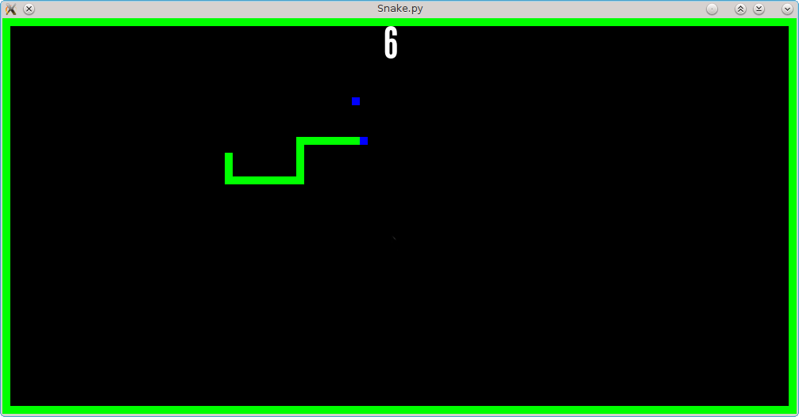
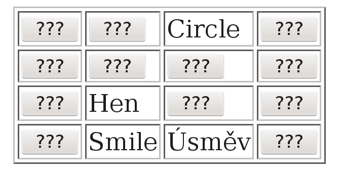
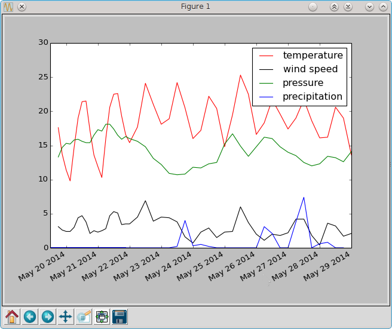

Proč jsme tu?
PyLadies
Mezinárodní skupina lidí,
kteří se snaží zapojit ženy do komunity
kolem programovacího jazyka Python.
Proč?
PyLadies u nás

2012: Django workshop na konferenci
PyLadies u nás

2012: Lynn Root na Pyvu
2013

2014
Na co se můžete těšit
Základy programování
Proměnné, datové typy, podmínky, cykly, funkce, výjimky, moduly, ...
Dovednosti okolo
Příkazová řádka
Správa verzí
Spolupráce a open-source
Textové rozhraní
_ _ n _
Hádaná písmena: g h m n u w x y z
Zadej písmeno: r
Ne!
+---.
| |
| O
| --|--
| / \
|
~~~~~~~
GAME OVER
Hry
Webové stránky
Data
...
Co neočekávat
Toto není
kurz informatiky

podle Sergio Cabello and Erin W. Chambers. Multiple source shortest paths in a genus g graph. Proc. 18th Annual ACM-SIAM Symposium on Discrete Algorithms 89–97, 2007.
(Zdroj)
Toto není
webový workshop
PyLadies nejsou
kurz
Zapojte se!
Sledujte diskuzní skupinu
Pomozte s organizací
Poděkování
A teď k věci
Programování
Programovat znamená přikazovat strojům, co mají dělat.
Na zadávání příkazů je ale pořád ještě nejlepší prostý text.
Python
Programovací jazyk, který se tu naučíme.
Příkazová řádka
Způsob, jak zadávat textové příkazy
Zkuste si: Úvod do příkazové řádky